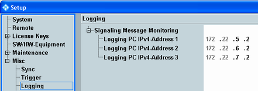

If supported by a signaling application, messages exchanged between the signaling application and the DUT can be monitored.
For this purpose, connect an external logging PC to a LAN SWITCH connector provided by the option R&S CMW-B661x. The messages are sent to the logging PC, where they are analyzed.
If your instrument contains no R&S CMW-B661H and no DAU, message monitoring requires a specific IP address assigned to the "Lan Remote" network adapter; see "IP Subnet Configuration".
The "Logging" section of the "Setup" dialog provides general settings, applicable to all signaling applications supporting message monitoring.

Configures the logging PC address pool. In the signaling application, you select the pool entry to be used, so different signaling applications can use different logging PCs.
The logging PCs are connected to the internal subnet of the instrument. Thus the first two address segments are determined by the subnet configuration. The other parts support only a limited range. Assign compatible addresses to the logging PCs.
See also "IP Subnet Configuration"
Remote command: